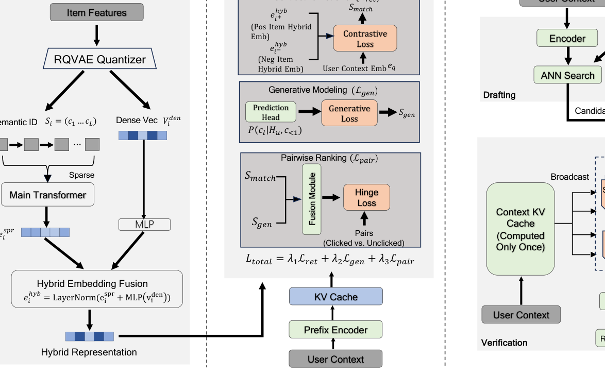

DaV-Gen: End-to-End Generative Retrieval via Draft-and-Verify (基于起草-验证的端到端生成式检索)
- 会议/期刊: IJCAI 2026
- 作者与机构: Meng Zhao, Chunmei Liu, Qinyong Wang（虎鲸数字娱乐集团 / 阿里巴巴）
- 推荐链路定位: 端到端生成式（召回+排序统一）
- 研究方向: 生成式推荐与离散语义ID / 协同过滤与双塔召回
- 论文原文: 论文原文链接
- 开源代码: 暂未开源
TL;DR (1分钟核心速览)
针对多级级联架构（MCA）阶段目标不一致导致误差传播、以及生成式检索（GenIR）自回归解码延迟高达约3s的两大痛点，本文提出 DaV-Gen：将生成任务重构为单模型内的“起草-验证”双操作，用混合稀疏-稠密表征支撑 ANN 高速起草，用融合生成似然与向量相似度的打分做并行验证。在 Amazon 三数据集 Leave-One-Out 全库排序下 Recall@10 相对最强基线 OneRec 提升 2.48%–2.89%，工业 Ind-Search 上 Recall@50 从 44.7% 跃升至 77.4%，线上延迟由级联 130ms 降至约 70ms。
Background & Motivation (背景与核心矛盾)
- 主流范式: 工业检索系统普遍采用“召回-粗排-精排”多级级联（MCA），召回靠 MIPS 双塔保召回，精排靠复杂交互网络保精度。
- 前人局限: 其一，各阶段优化目标割裂，召回阶段的漏召不可逆，误差逐级放大；其二，TIGER/LC-Rec 等 GenIR 模型虽以 Semantic ID 序列到序列统一了流程，但逐 token 自回归解码带来 \(O(L)\) 串行延迟，且无法确定性地控制推荐列表长度。
- 核心洞察 (Key Insight): 生成式模型的瓶颈不在“生成能力”本身，而在“必须串行生成”这一解码形式；若把生成拆成“粗筛候选”与“精细打分”两步，且两步共享同一套参数与表征空间，就能同时拿到检索的速度与生成的精度。
- 本文切入点: 借鉴推测解码（speculative decoding）思想，用向量 ANN 起草候选、用单次前向并行验证，把 \(O(L)\)串行解码替换为\(O(1)\) 并行打分。
Method (核心方法设计)
1. 整体框架 (Overall Architecture)
输入用户上下文 \(H_u\)（推荐为交互历史+画像，搜索为 query+历史），经 Prefix Encoder 编码为查询向量\(e_q\)并缓存其 KV 状态。物品侧由 RQ-VAE 量化器产出 Semantic ID\(S_i=(c_1,\dots,c_L)\)，其稠密编码器输出\(v_i^{den}\)与 Semantic ID 经主干 mean-pooling 得到的\(e_i^{spr}\)融合为混合锚向量\(e_i^{hyb}\)，全库预计算建向量索引。训练时单模型以对比损失、生成损失、成对排序损失联合优化；推理时先 ANN 起草\(N\) 个候选，再广播上下文 KV 缓存、对全部候选单次前向并行验证并 Top-K 排序输出。
flowchart TD
A["用户上下文 H_u / Query"] --> B["Prefix Encoder + KV Cache"]
C["物品特征 → RQ-VAE Semantic ID"] --> D["混合稀疏-稠密表征 e_i^hyb"]
D --> E["全库向量索引 (ANN)"]
B --> F["Stage1 起草: ANN 检索候选集 C_u"]
E --> F
F --> G["Stage2 并行验证: 广播 KV 缓存 + 融合打分"]
G --> H["Top-K 排序列表 R_u"]
2. 关键设计拆解 (Key Designs)
-
混合稀疏-稠密物品表征（Hybrid Sparse-Dense Representation）：纯离散 token 丢失细粒度语义、纯稠密向量缺乏层级结构，二者单独使用都不足以支撑高召回起草。本文将 RQ-VAE 量化前的连续编码 \(v_i^{den}\)与 Semantic ID 的上下文化池化向量\(e_i^{spr}\) 经投影融合为定长锚向量： $\(e_i^{hyb}=\mathrm{LayerNorm}\big(e_i^{spr}+\mathrm{MLP}(v_i^{den})\big)\)$ 关键在于它把多模态语义压缩成与 MIPS 兼容的单一向量——这正是 COBRA 式“稀疏-稠密交替序列”无法直接支持 ANN 起草、而本文能支持的原因。
-
复合损失统一起草与验证（Composite Loss）：级联的目标不一致本质是召回空间与排序偏好未对齐。总损失为 $\(\mathcal{L}_{total}=\lambda_1\mathcal{L}_{ret}+\lambda_2\mathcal{L}_{gen}+\lambda_3\mathcal{L}_{pair}\)$ 其中 \(\mathcal{L}_{ret}\)为 batch 内负采样的 InfoNCE，把嵌入空间整理成适合 MIPS 的语义簇；\(\mathcal{L}_{gen}\)只对单个物品内部 token 保留自回归依赖（不跨物品），提供“该物品在此上下文下是否合理”的正交信号；\(\mathcal{L}_{pair}\)在融合打分\(\sigma(i)=f_{fusion}(s_{match}(i),s_{gen}(i))\) 上做 hinge 排序，并同时构造同 session 点击/未点击的难负对与曝光/随机负对的校准对，前者优化参与度、后者保证全局打分标定。
-
渐进知识注入与并行推理效率：Semantic ID token 随机初始化直接全参微调会灾难性遗忘 PLM 语言能力，故先冻结主干仅训新 token 嵌入做对齐，再解冻全参做深层语义整合。推理端用 Broadcasted Prefix Caching 将上下文 KV 只算一次并广播给 \(N\)个候选，把上下文编码复杂度从\(O(N\cdot|H_u|)\)降到\(O(|H_u|)\)，实现\(O(1)\) 并行打分与确定性的列表长度控制。
Experimental Setup & Evaluation Protocol (实验设置与评估协议)
- 数据集与预处理: 三个公开推荐基准 + 一个工业搜索集，均采用 leave-one-out 划分：
| 数据集 | #Users | #Items | #Interactions | 稀疏度/密度 | 特征/场景说明 |
|---|---|---|---|---|---|
| Amazon Beauty | 22.4k | 12.1k | 198.5k | 99.93% 稀疏 | 美妆评论序列推荐 |
| Amazon Sports | 35.6k | 18.4k | 296.3k | 99.95% 稀疏 | 运动户外序列推荐 |
| Yelp | 30.4k | 20.1k | 316.4k | 99.95% 稀疏 | 本地生活商户 |
| Ind-Search | — | >100M | >500M 日志 | 极稀疏 | 头部视频搜索引擎工业 query 日志 |
- 数据划分与防穿越 (Splitting Strategy): 全部数据集采用
Leave-One-Out（末次交互为测试、倒数第二次为验证），工业集按线上日志时序构造。 - 排名评测协议 (Ranking Protocol): 公开集采用无偏
Full-Ranking（全库未交互物品排序），报告 Recall@10 与 NDCG@10；工业集报告 Recall@50、NDCG@10、MRR@10。 - 对比基线与超参设置: 判别式基线 SASRec、BERT4Rec、HGN 与线上 MoE；生成/检索基线 TIGER、LC-Rec、OneRec 及微调稠密检索器 gte-qwen-7b。所有模型嵌入维度 \(d=64\)，生成式模型统一 5 层层级量化码本，Adam 优化器 lr=\(1\times10^{-5}\)、batch=256；线上 A/B 以\(p<0.05\) 为显著性标准。
Key Experimental Results (实验关键数据)
1. 主实验对比 (Main Results)
| 方法 | Beauty R@10 | Beauty N@10 | Sports R@10 | Sports N@10 | Yelp R@10 | Yelp N@10 |
|---|---|---|---|---|---|---|
| SASRec | 0.0624 | 0.0385 | 0.0482 | 0.0295 | 0.0681 | 0.0412 |
| BERT4Rec | 0.0638 | 0.0392 | 0.0495 | 0.0301 | 0.0695 | 0.0425 |
| HGN | 0.0705 | 0.0441 | 0.0571 | 0.0358 | 0.0738 | 0.0462 |
| TIGER | 0.0698 | 0.0435 | 0.0552 | 0.0348 | 0.0725 | 0.0455 |
| LC-Rec | 0.0715 | 0.0452 | 0.0568 | 0.0355 | 0.0742 | 0.0468 |
| OneRec | 0.0732 | 0.0465 | 0.0588 | 0.0370 | 0.0765 | 0.0481 |
| DaV-Gen | 0.0752 | 0.0481 | 0.0605 | 0.0382 | 0.0784 | 0.0495 |
| Improv. | +2.73% | +3.44% | +2.89% | +3.24% | +2.48% | +2.91% |
工业 Ind-Search 上，DaV-Gen 的 Recall@50 达 77.4%（稠密检索器 44.7%，+32.7 个绝对点），NDCG@10 由 0.569 升至 0.589，MRR@10 由 0.895 升至 0.942。线上 A/B（百万级用户、一周）：人均时长 +2.09%、用户转化率 +0.47%、平均成功搜索 +0.31%，均 \(p<0.05\)；推理延迟约 70ms，对比级联 130ms（2.5×加速）与纯生成式约 3s。
2. 消融实验 (Ablation Study)
| 变体 | Beauty R@10 | Beauty N@10 | Sports R@10 | Sports N@10 |
|---|---|---|---|---|
| DaV-Gen (Full) | 0.0752 | 0.0481 | 0.0605 | 0.0382 |
| w/o Hybrid Rep. | 0.0710 | 0.0445 | 0.0569 | 0.0355 |
| w/o Prog. Inject. | 0.0722 | 0.0458 | 0.0580 | 0.0366 |
| w/o Gen. Loss | 0.0718 | 0.0454 | 0.0575 | 0.0362 |
| w/o Fusion Loss | 0.0728 | 0.0462 | 0.0588 | 0.0371 |
3. 关键实验发现 (Key Findings)
- 稠密向量是起草召回的主力：去掉混合表征后 Beauty Recall@10 从 0.0752 跌至 0.0710（-5.6%），是所有消融中最大跌幅，说明纯稀疏 Semantic ID 的语义粒度不足以支撑高召回 ANN 起草，稠密分量贡献了主要覆盖度。
- 渐进对齐不可省，但收益小于表征融合：跳过嵌入对齐阶段后 Beauty Recall@10 降至 0.0722（-4.0%），验证了 PLM 与随机初始化 ID token 之间存在语义鸿沟，需要先对齐再全参微调，否则收敛次优。
- 生成损失与融合排序损失各司其职：去掉 \(\mathcal{L}_{gen}\)使 Beauty NDCG@10 降至 0.0454（-5.6%），说明 token 级生成信号提供了对比学习无法捕获的物品内部组合语义；去掉\(\mathcal{L}_{pair}\) 则 NDCG 一致下滑（0.0481→0.0462），证实融合排序损失负责把起草空间与验证偏好对齐，直接决定最终排序质量。
Highlights & Limitations (亮点、对比与审稿批判)
- 与代表作对比 (vs. Prior Work): 相较 TIGER/LC-Rec 的逐 token 自回归解码，本文以 ANN 起草+并行验证把延迟从秒级压到 70ms 量级；相较 OneRec 的结构性统一，本文进一步用融合打分显式对齐召回与排序偏好；相较 COBRA 的稀疏-稠密交替序列，本文将其压成单一 MIPS 兼容向量，从而真正支持向量起草。
- 可迁移亮点: ①“广播 KV 缓存 + 批量候选并行打分”可直接迁移到任何 LLM 重排/验证场景，把上下文编码开销摊薄到候选集；②难负对+随机负对的双源 hinge 构造，是一种低成本且有效的打分标定技巧，可复用于精排校准。
- 审稿级局限批判: ①起草阶段仍依赖离线预计算的全库混合向量索引，物品更新需重建索引，冷启动物品的 \(v_i^{den}\) 与 Semantic ID 质量直接决定上限；②公开集实验仅在三个 Amazon/Yelp 中小规模基准上做 Leave-One-Out，缺少采样排序协议与显著性检验的完整报告，且工业集指标提升（NDCG +0.02）幅度较小，泛化性证据偏弱。
Rating (四维评分)
- 方法创新性 (Novelty): ⭐⭐⭐⭐ （将推测解码思想迁移到生成式检索，起草-验证单模型统一范式清晰，但各组件多为已有技术的巧妙重组）
- 评估协议与实验扎实度 (Protocol & Experiments): ⭐⭐⭐⭐ （Full-Ranking + 工业级 100M 物品集 + 线上 A/B 三重验证较扎实，公开集缺显著性检验与采样协议对比）
- 写作与数学规范度 (Clarity & Rigor): ⭐⭐⭐⭐ （三大设计问题驱动叙事、公式与损失定义完整，融合网络 \(f_{fusion}\) 的具体结构未展开）
- 工业落地与复现价值 (Industrial & Practical Value): ⭐⭐⭐⭐⭐ （70ms 延迟、确定性列表长度控制与线上正向收益，工程价值突出；可惜暂未开源）